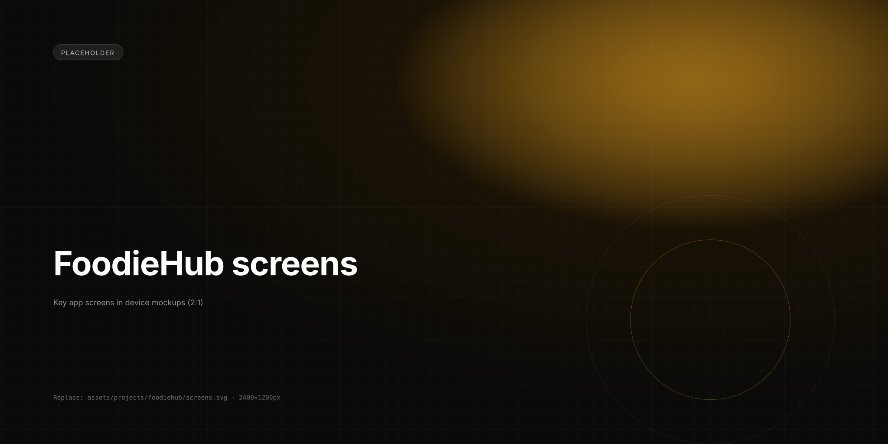
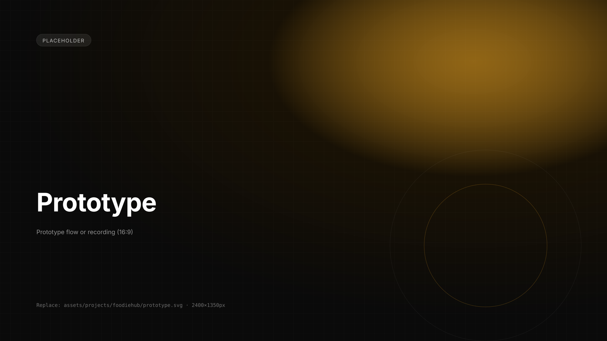

Project overview
Your previous portfolio doesn’t state your role, whether this was a client or self-initiated concept, or who you worked with. Add these before publishing.
A mobile app for finding and ordering food from local restaurants, designed around personalisation, offers and quick decisions.
The challenge
Choosing where to eat in a city with endless options takes effort. The aim was to reduce that effort — helping people decide faster with relevant suggestions, timely offers and clear, scannable information.
Research themes
Research focused on navigation, personalisation and engagement, and shaped seven design principles:
01Seamless navigation
Make discovery effortless.
02Personalisation & relevance
Suggest what fits the person.
03Visually engaging, easy to use
Food imagery with scannable labels.
04Real-time offers
Dynamic updates that feel timely.
05Contextual & seasonal engagement
e.g. Ramadan-themed privileges.
06Optimised journey
Smooth flow from browse to order.
07Functional and aesthetic
Trustworthy, professional look.
Add your research method (interviews, survey, competitor review) and sample size, plus 2–3 concrete findings.
Key features
01Search
Search by food category and keyword.
02Instant offers & unlocks
Including Ramadan-themed privileges.
03Restaurant suggestions
Cafés, romantic dining, nightlife, outdoor seating.
04‘What are you looking for?’
Filter by meal type or budget.
05Must-tries in Dubai
Curated lists.
06Popular around you
Location-based walk-in offers and ratings.
Bottom navigation: Home, Discover, Cart, Offers, Profile.
Visual design
Layout, colour, typography and iconography were chosen for a professional, trustworthy look, with food imagery doing the emotional work and short labels keeping screens scannable.

Prototype & flow testing
A Figma prototype was used to test the user flow and smooth screen transitions.

Outcome & next steps
No measured outcomes are documented for this project.
If this was a concept, say so plainly — it’s a strength, not a weakness, when the thinking is clear. Add what you would test next.